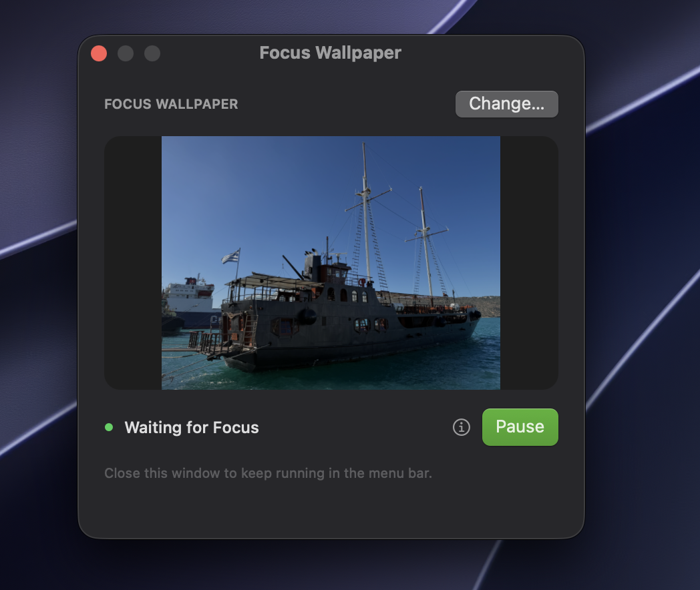

A little app for macOS
Your Focus.
Your wallpaper.
Give Focus its own desktop. Pick an image, turn Focus on, and let your surroundings change with you.

A small setup, once.
Open the download and drag Focus Wallpaper into Applications. Choose an image and click Start. No Shortcut or LaunchAgent is needed.
If macOS asks for file access
Pause monitoring, then choose Allow Focus File Access… from the moon menu. Select ~/Library/DoNotDisturb/DB. Access is remembered when you reopen the app.
Some macOS versions may require broader Full Disk Access. See the setup instructions before granting it.
Good to know.
One image is used for all Focus modes. It appears as a temporary desktop layer, leaving your original wallpaper and lock screen untouched.
Compatibility & download details
The download is for Apple silicon. The project targets macOS 12+, but it reads an undocumented Focus state format, so macOS updates can affect detection. The app is signed ad hoc and is not notarized.
Monitoring starts when you click Start. Pause or Quit removes the Focus image. Read the current limitations or build from source.
A desktop for your next Focus.Small, local, and free to make your own.
Get Focus Wallpaper